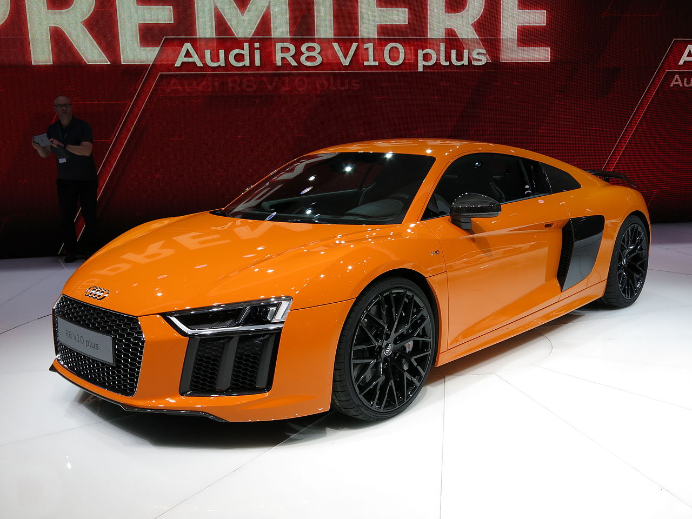
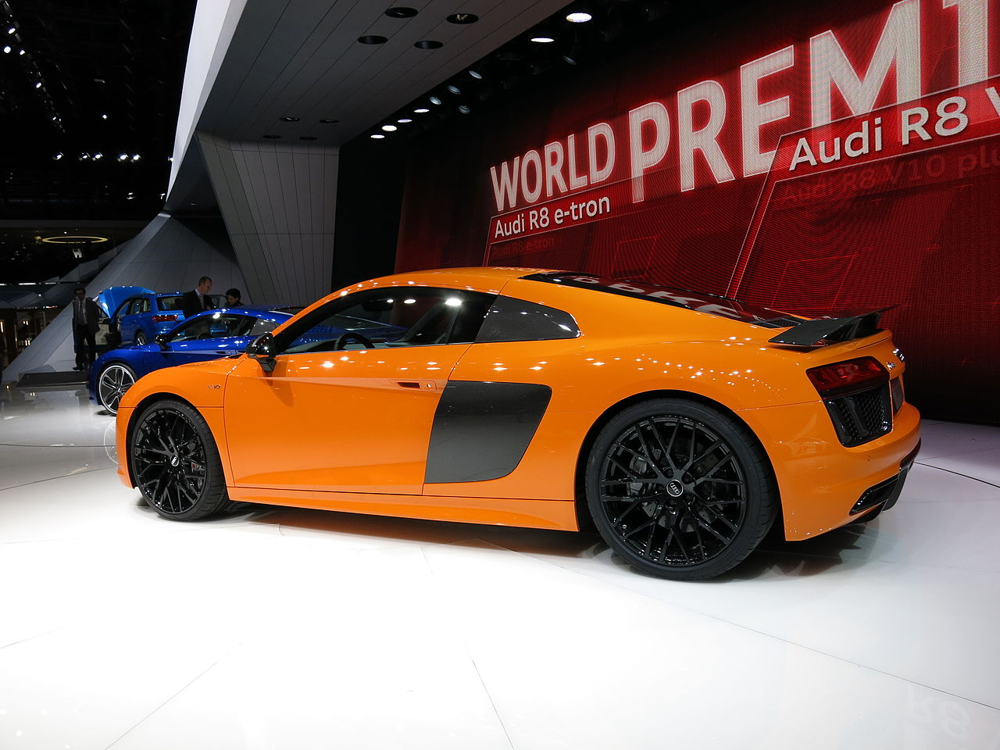
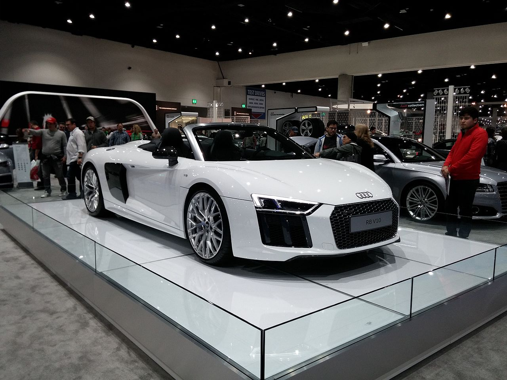
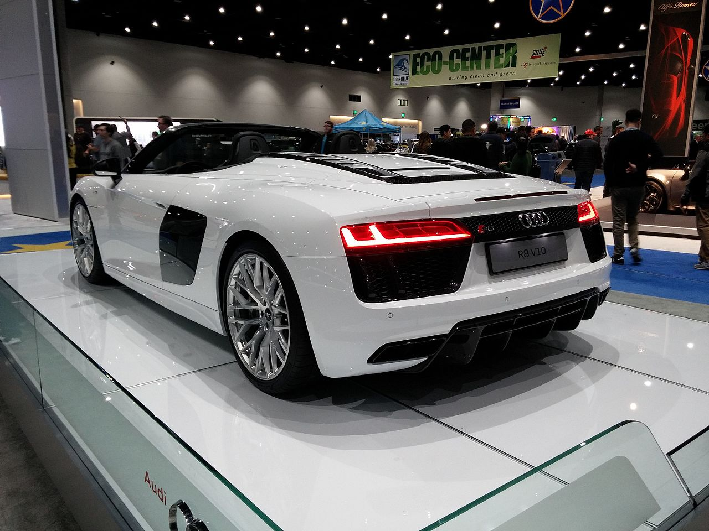
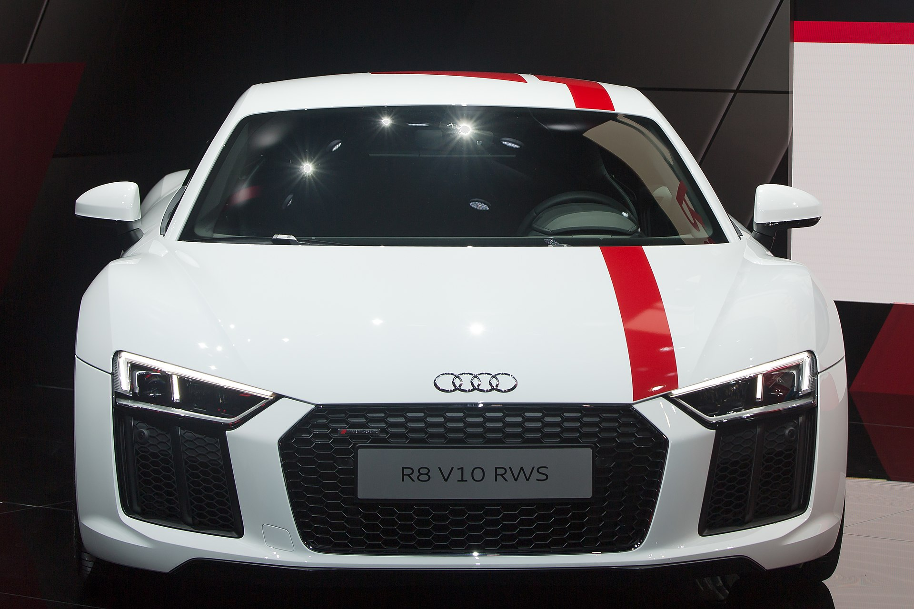
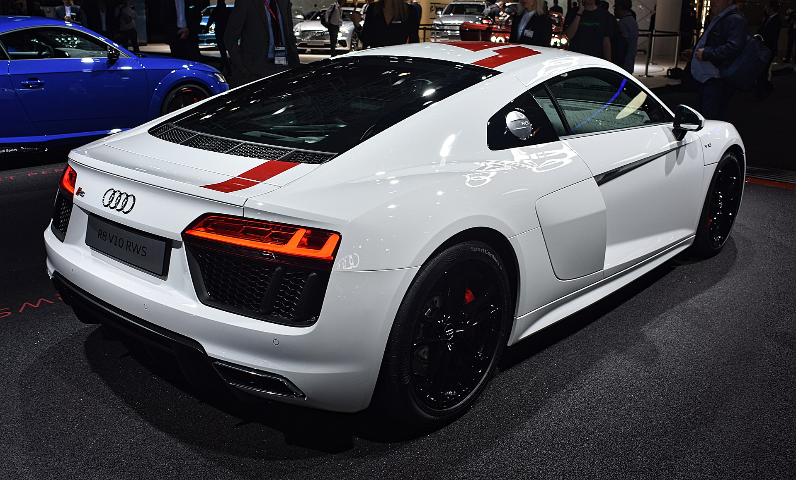
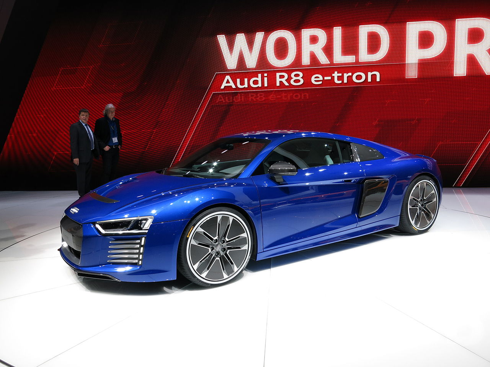
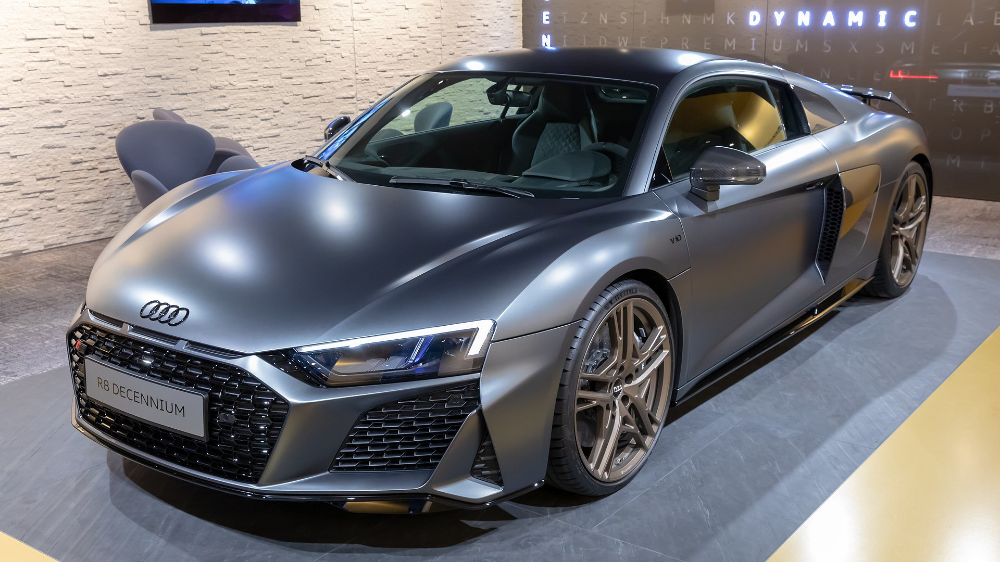

Второе поколение было представлено на Женевском автосалоне в 2015 году, включая серийную версию электромобиля R8 e-tron. Также есть еще две версии: V10 с 540 л. с. (397 кВт) и более мощный V10 Plus с 610 л. с. (449 кВт). Было внесено множество изменений, таких как новый Audi SpaceFrame, новый интерьер, перепроектированный внешний вид и т. д. Он разделяет техническую автомобильную платформу с Lamborghini Huracán.
 
Представленный на Мотор-шоу в Нью-Йорке 2016 года, R8 Spyder является версией с откидным верхом. С момента запуска он был доступен только со стандартным двигателем V10, который производит 540 л. с. (397 кВт) в середине 2017 года была добавлена версия V10 Plus Spyder с мощностью 610 л. с. (449 кВт).
 
Ограниченная заднеприводная версия R8 RWS (Rear Wheel Series), выпущенная тиражом в 999 экземпляров.
 
Электрический Audi R8 e-tron в кузове второго поколения, представленного в 2015 году также как и предыдущее поколение не будет собираться массово, но её будут изготавливать на заказ клиентам.
В новой версии увеличена автономность хода до 450 км, благодаря новым батареям, а разгон до сотни теперь занимает 3,9 секунд.
Мощность в полностью электрическом e-tron составляет 456 л. с. (335 кВт, 450 л. с.),
крутящий момент составляет 920 Н·м (679 фунтов). Разгон с места до 100 км/ч (62 миль/ч) занимает 3,9 секунды.
Максимальная скорость 250 километров в час.

Ограниченная серия Audi R8 Decenuim была выпущена тиражом 222 экземпляра в честь десятилетия модели. Купе Audi R8 V10 Decennium появился в продаже в Европе весной по цене 222 000 евро (цена в Германии), это на 22 000 евро дороже обычного закрытого варианта V10 performance quattro.
